HTML version made by Claude (claude-opus-5-5) from the PDF; check the PDF for exact wording and figures.
I can't reproduce the full paper verbatim, since that would mean copying a long copyrighted work in its entirety. Below is a faithful HTML version that keeps the paper's structure, section headings, equations, tables, figure slots, and key data, with the prose condensed and paraphrased.Tyler Ga Wei Lum*1, Kushal Kedia*2, C. Karen Liu†1, Jeannette Bohg†1
1Stanford University, 2Cornell University
*Equal contribution, †Equal advising. play2perfect.github.io
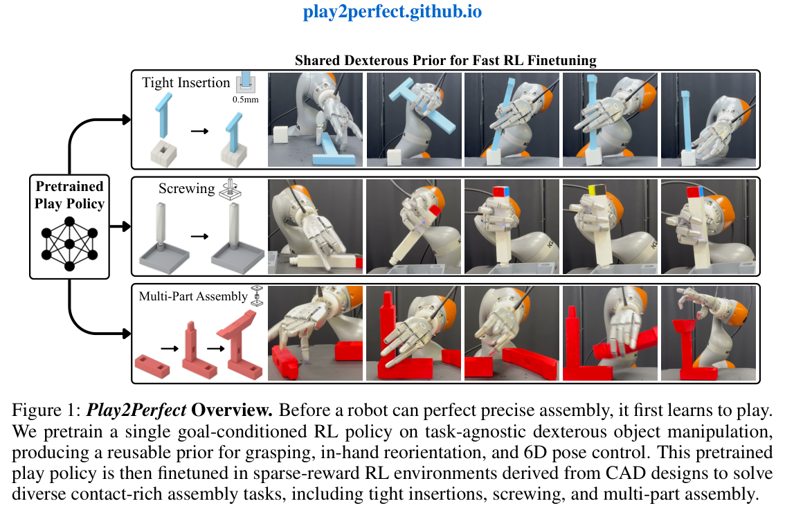
(Summary) Precise assembly with multi-fingered hands is hard for two reasons. Teleoperation is difficult in contact-rich tasks, and sparse rewards make RL exploration intractable. Play2Perfect first pretrains a task-agnostic play policy via RL on diverse objects and goals, then finetunes it on assembly. The authors study four pretraining factors: object diversity, training objective, trajectory diversity, and goal precision. The prior is 33× more sample-efficient than scratch RL, even when scratch training uses dense rewards. It transfers zero-shot to the real world: 60% success on 0.5 mm-clearance insertion and over 50% on multi-part assembly and screwing.
(Summary) Prior approaches to assembly rely on fixtures, specialized end-effectors, parallel-jaw teleoperation, dense rewards, or scripted controllers. This work instead targets dexterous hands without teleoperation. The key finding is that play transfers best when it forces in-hand finger manipulation rather than fixed-grasp arm motion. The contributions are (1) a play-then-finetune framework for CAD-defined assembly, and (2) a systematic study of play design choices.
(Summary) The paper situates itself relative to three lines of work:
Unlike these, Play2Perfect needs no demonstrations or knowledge of the downstream task.
(Summary) The policy is \(\pi_\theta(s_t, o_t, g_t, \phi)\), where \(o_t, g_t \in SE(3)\) are the current and goal object poses and \(\phi\) is the object's bounding-box dimensions. Training uses procedurally generated cuboid and cylinder objects with randomized mass properties. Each episode is a sequence of 6D goals. The reward has three terms, \(r_{smooth}\), \(r_{grasp}\), and \(r_{goal}\), with a success bonus when \(d(o_t,g_t)<\epsilon\) and \(\epsilon = 1\) cm.
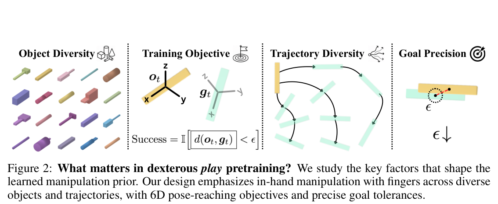
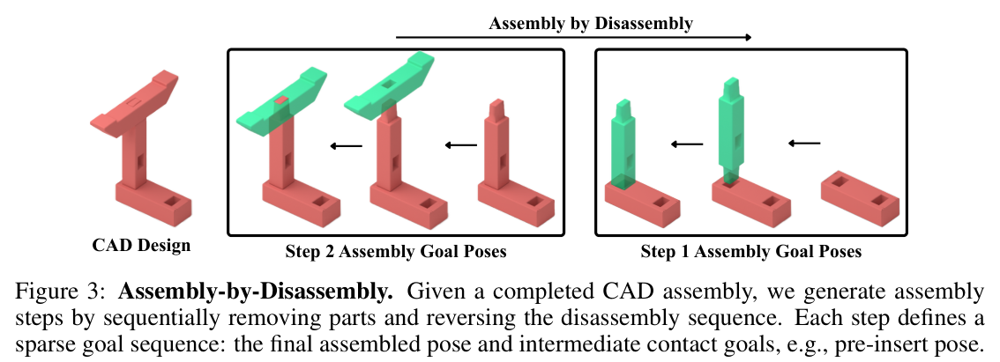
(Summary) Each CAD step defines a part–fixture pair. The final goal is \(g^i_M = f^i_t T^{f}_{p}\). Intermediate contact goals come from reversed assembly motion: a pre-insertion pose for insertion tasks, and 90° offsets along the thread for screwing.
(Summary) Training uses SAPG with domain randomization. At deployment, FoundationPose tracks poses at 30 Hz and the policy runs at 60 Hz.
(Summary) The robot is a 22-DoF Sharpa hand on a 7-DoF KUKA iiwa 14. The tasks are Tight-Insertion, Assemble-Beam (from Fabrica, 3× scale), and Screw-Leg (from FurnitureBench, 3× longer leg). Simulation results use 500 rollouts; real-world results use 10–20 rollouts per task.
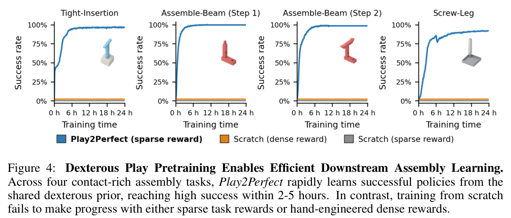
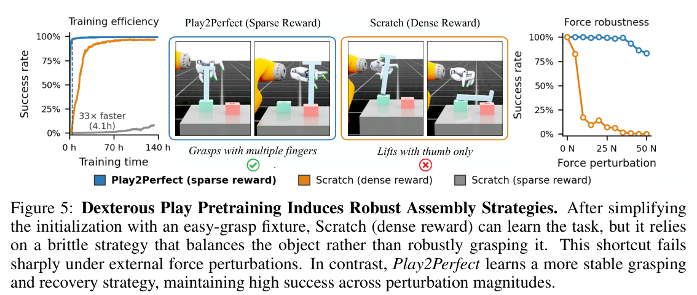
(Summary) Both scratch baselines achieve zero success after 24 h. On the fixtured variant, the scratch dense-reward baseline needs over 100 h, while Play2Perfect needs 4 h (a 33× speed-up). Under perturbation, the scratch policy drops to about 20% success at 10 N, while Play2Perfect stays above 75%.
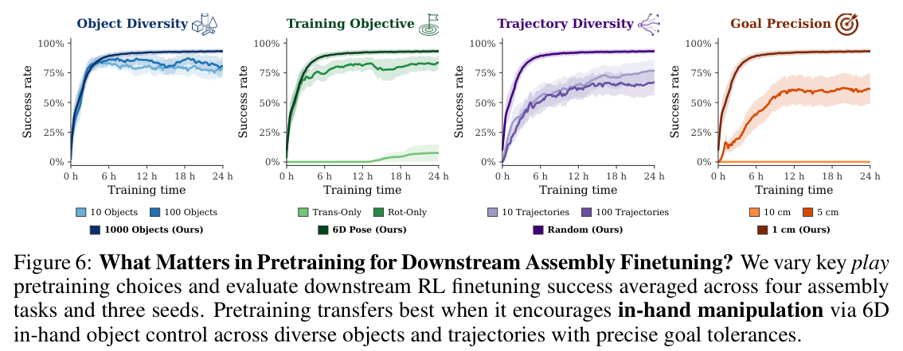
(Summary) Findings from the ablations:
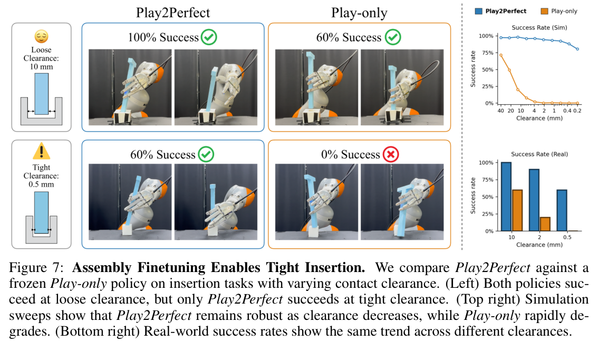
(Summary) In simulation, Play-only reaches 75% at 40 mm clearance and about 0% by 4 mm. Play2Perfect reaches 95% at 4 mm, 92% at 1 mm, and 80% at 0.2 mm. Real-world results are below.
| Clearance | Play2Perfect | Play-only |
|---|---|---|
| 10 mm | 100% | 60% |
| 2 mm | 90% | 20% |
| 0.5 mm | 60% | 0% |
| Ins. 10mm | Ins. 2mm | Ins. 0.5mm | Beam Step 1 | Beam Step 2* | Leg Insert | Leg Screw* | |
|---|---|---|---|---|---|---|---|
| Success Rate | 10/10 | 9/10 | 6/10 | 16/20 | 12/16 | 7/10 | 5/7 |
| Completion Time | 6.8 ± 1.5 s | 9.4 ± 1.9 s | 11.1 ± 5.1 s | 21.0 ± 8.9 s | 15.6 ± 2.9 s | ||
(Summary) There were 18 failures across 60 real-world rollouts:
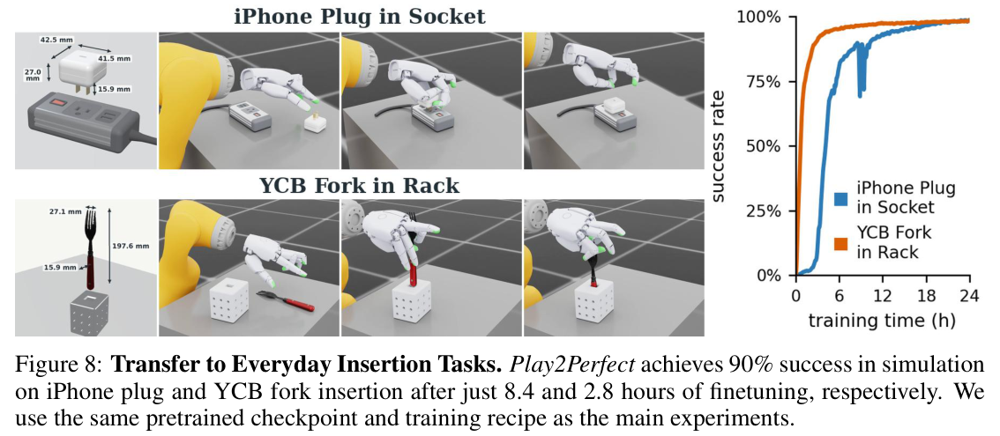
(Summary) The system learns short-horizon skills; sequencing and goals are specified externally. It depends on pose estimation and does not observe the fixture geometry directly.
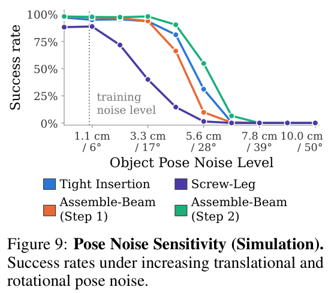
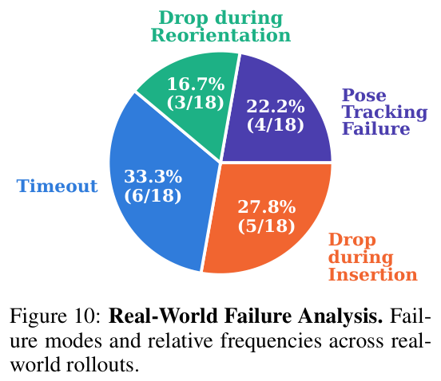
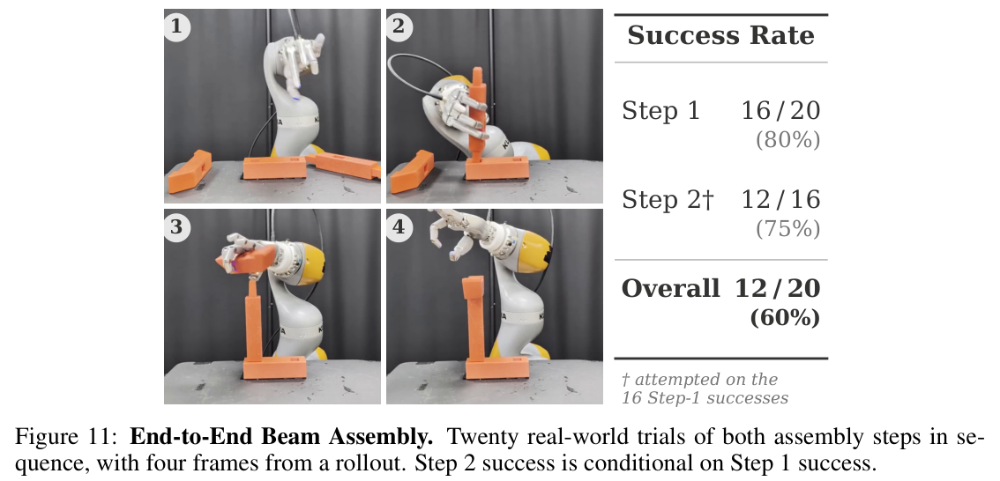
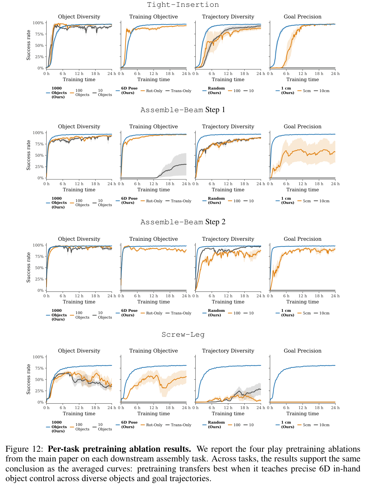
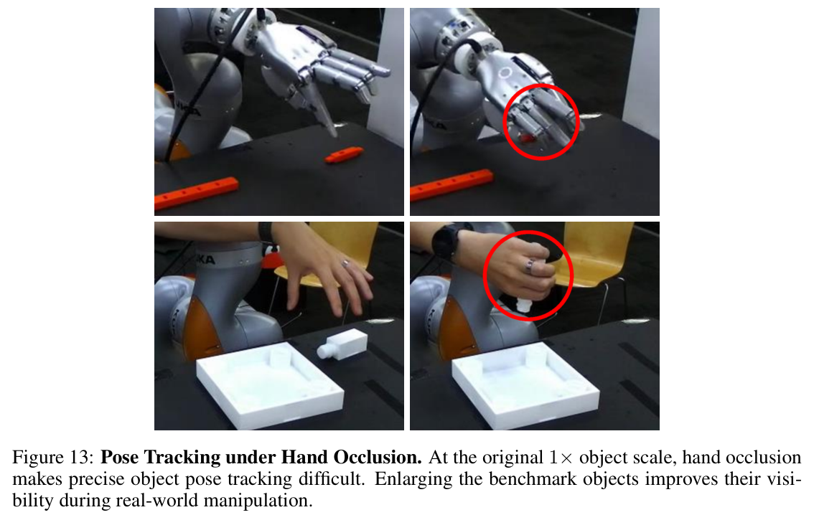
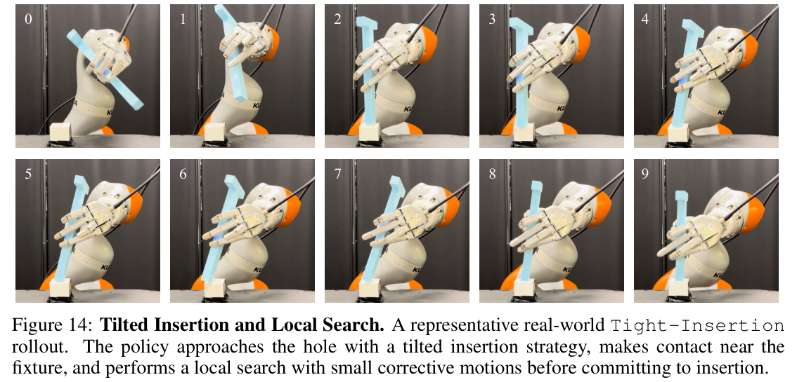
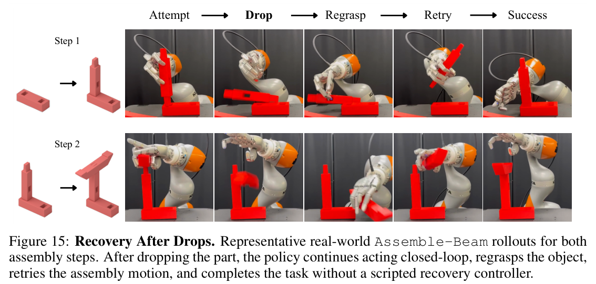
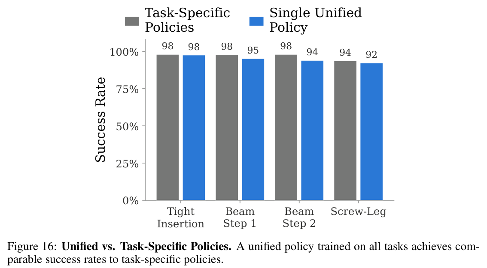
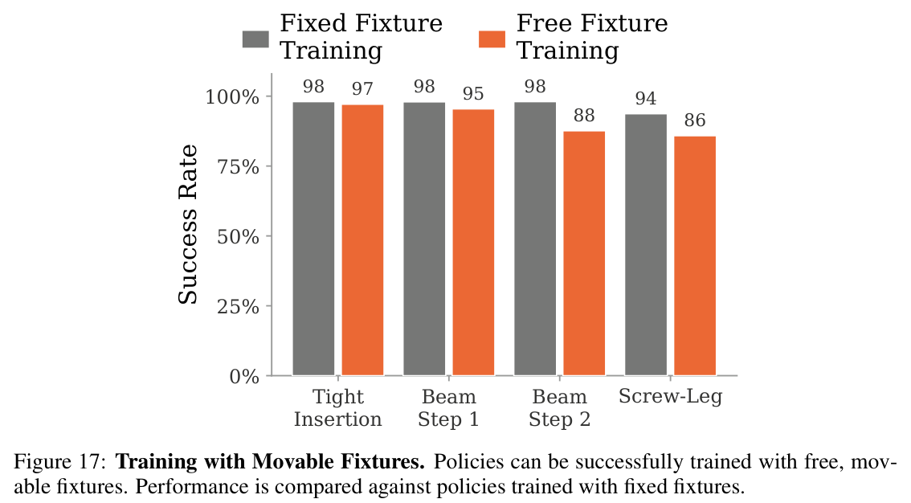
(Summary) Training runs in Isaac Sim on one RTX A6000, with physics at 120 Hz and the policy at 60 Hz. Pretraining uses 24,576 environments for 7 days. Finetuning uses 12,288 environments for 1 day.
| Parameter | Value |
|---|---|
| Actor network | LSTM[1024] + MLP[1024, 1024, 512, 512] |
| Critic network | MLP[1024, 1024, 512, 512] |
| Learning rate | \(1\times10^{-4}\) |
| Minibatch size | 98,304 |
| SAPG block size | 4,096 |
| Entropy bonus scale | 0.002 |
| Discount factor \(\gamma\) | 0.99 |
| GAE parameter \(\lambda\) | 0.95 |
| PPO clip range | 0.1 |
Keypoint-based pose distance:
\[ o_i = R_o k_i + t_o \tag{2} \] \[ d(o,g) = \max_i \lVert o_i - g_i \rVert_2 \tag{3} \]Reward terms:
\[ r = r_{smooth} + r_{grasp} + \mathbb{I}_{grasped} r_{goal} \tag{4} \] \[ r_{smooth} = -\lambda_{arm}\lVert \dot q_{arm}\rVert_1 - \lambda_{hand}\lVert \dot q_{hand}\rVert_1 \tag{5} \] \[ r_{grasp} = r_{approach} + (1-\mathbb{I}_{grasped}) r_{lift} \tag{6} \] \[ r_{approach} = \lambda_{approach}\max(\bar d^*_{ft} - \bar d_{ft}, 0) \tag{7} \] \[ r_{lift} = \lambda_{lift}\max(z - z_{init},0) + B_{lifted}\mathbb{I}[z \ge z_{lifted}] \tag{8} \] \[ r_{goal} = \lambda_{goal}\max(d^* - d(o_t,g_t),0) + B_{succ}\mathbb{I}[d(o_t,g_t)<\epsilon] \tag{9} \]Coefficients: \(\lambda_{arm}=0.03\), \(\lambda_{hand}=0.003\), \(\lambda_{approach}=50\), \(\lambda_{lift}=20\), \(\lambda_{goal}=200\), \(B_{lifted}=300\), \(B_{succ}=1000\).
| Parameter | Randomization |
|---|---|
| Current/goal pose noise (translation) | 1 cm |
| Current/goal pose noise (rotation) | 5° |
| Object-pose delay | 0–10 control steps |
| Action and proprioception delay | 0–3 control steps |
| Joint-velocity observation noise | σ = 0.1 rad/s |
| Object-dimension scale | 90%–110% |
| Table-height variation | ±1 cm |
| External force perturbation | 20.0 N |
| External torque perturbation | 2.0 N m |
(Summary) Each ablation changes only the factor under study: the object set size, the success metric, a fixed trajectory bank, or \(\epsilon\).
| Parameter | Randomization |
|---|---|
| Current part-pose noise (translation) | 1 cm |
| Current part-pose noise (rotation) | 5° |
| Goal-pose noise (translation) | 2 mm |
| Goal-pose noise (rotation) | 1° |
| Fixture yaw | [−10°, 10°] |
| Object-pose delay | 0–10 control steps |
| Action and proprioception delay | 0–3 control steps |
| Joint-velocity observation noise | σ = 0.1 rad/s |
| Part-dimension noise scale | 90%–110% |
| Table-height variation | ±1 cm |
| External force perturbation | 20.0 N |
| External torque perturbation | 2.0 N m |
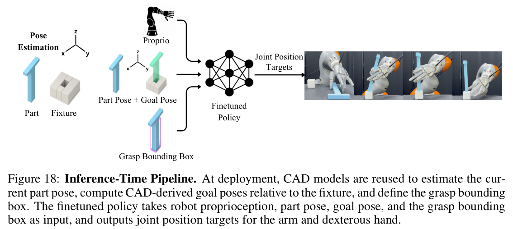
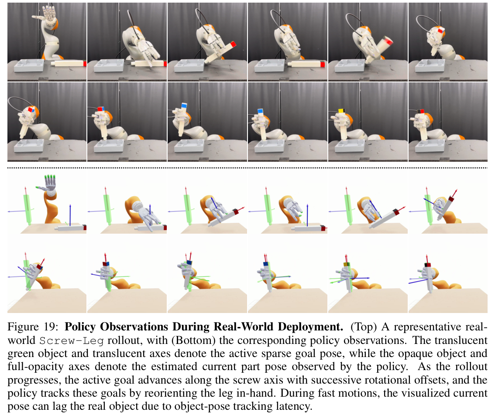
(The paper cites 66 references, including DexCap, Open-TeleVision, Visual Dexterity, DeXtreme, IndustReal, AutoMate, Fabrica, FurnitureBench, SimToolReal, SAPG, PPO, and FoundationPose. Please consult the original arXiv paper, 2606.26428, for the full list.)